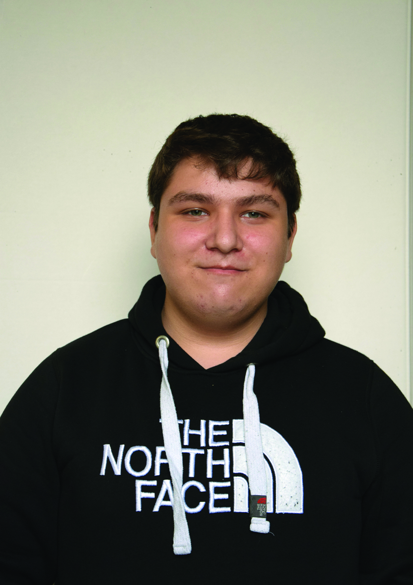

Hallo, Mijn naam is Dzhaner Apti, ik ben 21 jaar en ik heb een grote passie voor IT. Vooral netwerken en cybersecurity spreken me sterk aan, omdat ik graag werk rond het beveiligen en optimaliseren van systemen. Ik ben iemand die leergierig en analytisch te werk gaat en steeds op zoek is naar nieuwe uitdagingen om mijn kennis in de praktijk toe te passen.